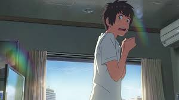

Kimi No Nawa
Your name
Chapter 3: Days
An unfamiliar ringing.
That thought drifted through my still fast asleep head. An alarm clock? But I’m still sleepy. Anyways, let’s sleep some more. Eyes still shut, I felt for the smartphone which should have been beside the futon.
Huh?
I extended my hand even farther. This alarm is really getting annoying… where the heck did I put it?
“Ow!”
With a thump, my back made a full force collision with the floor. Apparently, I just fell out of my bed… eh? Wait a second… bed?
Finally opening my eyes, I raised the upper half of my body. Huh?
A totally unfamiliar room.
I am in a totally unfamiliar room.
Did I spend the night somewhere?
“... Where am I?” As soon as those words left my mouth, I noticed that my throat felt strangely heavy. Instinctively, I put my hand against it. My fingers felt a hard, protruding lump.
“Hmm?” My voice sounded oddly deep. I dropped my glance down to my body.
… gone.
An unfamiliar T-shirt stretched straight down to my stomach. Gone. My boobs… are gone.
And right smack in the middle of my lower body, there was something, emitting such a strong sense of presence that it overshadowed the unnaturalness of my boobs’ absence. What… is this?
Slowly, I moved my hand closer to that thing. It felt as if skin and blood from my entire body were being sucked up into that one point.
… Is this.... Could it be…
……..
…..
….
My hand made contact.
I very nearly lost consciousness.
Who is this guy?
Standing in front of the mirror in an unfamiliar bathroom, I stared intently at the reflection of an unfamiliar face. The slightly sloppy hair coming down to eyebrow level had about a 6:4 ratio of not trying to trying. The eyebrows themselves gave an impression of stubbornness, but the pair of eyes below them, which were a little on the large side, looked like those of a kind person. Farther down were rough lips that seemed to be completely isolated from the concept of moisturization, and behind all this was a stiff neck.
For some reason, on one of the cheeks a large bandage had been stuck on, and, upon gently touching it, a dull pain ran throughout my face. It hurt, yet still I did not wake up. My throat was severely parched. I twisted the faucet on and gulped down water collected in both my hands. It was uncomfortably warm and smelled like pool water.
“Taki, are you up?”
Hearing a man’s voice suddenly from afar, I let out a little yelp. Taki? “... You were on breakfast duty today, weren’t you? What the hell are you doing?” As I peered timidly into what looked like the living room, a middle aged man wearing a suit glanced at me briefly before dropping his gaze back to his meal and tossing that question my way.
“S-Sorry!” I apologized reflexively.
“I’m going to head out. There’s some miso soup, so help yourself.”
“Ah, okay.”
“Even if you’re late, make sure you go to school,” the man said as he quickly gathered his dishes, put them on the small kitchen counter, walked past me standing frozen at the entrance towards the foyer, put on his shoes, opened the door, stepped outside, then shut the door. It all occurred in a flash, faster than a black kite could get out one chirp. “... What a weird dream,” I said out loud, then looked around the room once more. All over the wall, pictures of designs of bridges or buildings or various other structures were posted. On the floor, magazines and paper bags and cardboard boxes lay messily scattered about. Contrasted with the Miyamizu household, which boasted cleanliness on the level of a venerable ryokan (although that was all due to Grandma), it gave off the impression of a lawless wasteland. The room itself was rather small, so I guessed it must have been an apartment.
I don’t know where all the source material for this dream came from, but it seemed pretty realistic. My imagination must be great. Maybe I could be an artist or something in the future? Pirorin!
As if responding to my musings, the electronic dinging of a message being received rang from down the hallway. Panicking, I gulped and dashed back into the bedroom. A smartphone had fallen beside the sheets, and on the screen a short message was displayed.
Are you still at home? Run! - Tsukasa
Eh? What what? Who is Tsukasa?!
First things first, I need to go to school. I looked around and spotted a boy’s uniform hanging by the window. But the moment I took it, I realized an even more urgent issue. Ahh… why does it have to be now?
I need to go to the bathroom!
I let out a sigh heavy enough to make my entire body collapse. What is it with boys’ bodies?! I somehow finished my business with the toilet in one piece, but my body was still shaking from anger. Why is it that the more I tried to pee, the more I tried to adjust aim with my fingers, the harder and harder it got to let anything out?! Am I dumb?! Or is this guy just weird!? Ahh, I had never even seen one before! Despite all my complaining, I am still a shrine maiden!
Hanging my head at the unbearable disgrace and holding the tears back, or rather failing to and spilling a few, I changed into the school uniform and opened the apartment door. Anyways, let’s just get out of here, I thought, and raised my eyes.
-- And then.
By the sight before me,
My breath was stolen away.
I gulped.
I was standing in what seemed to be an elevated corridor of an apartment building. Beneath my eyes lay the green expanse of a park. The perfectly untainted sky was uniformly painted a vivid cerulean blue. And on the border where the green from below and the blue from above clashed, buildings of all sizes stood lined up, almost like rows of neatly folded origami. In every one of those buildings were detailed, elaborate windows, carved into the sides like stitched patterns. Some windows reflected the blue of the sky, some carried the deep green of the trees, and some glittered in the rays of the morning sun. The small red pinnacle visible in the distance, the rounded silver building somewhat resembling a whale, and the shining building which looked like it was cut out of a block of pure obsidian were surely all famous, sitting vaguely somewhere in the back of my memory. Also faraway, seemingly toylike cars formed into an orderly flow, weaving between the buildings.
The scene before me was far more beautiful than what I had imagined, or anything that I had seen on TV or in movies. Or perhaps I had never seriously tried to visualize it, but there it was: the cityspace of the largest metropolis in Japan. Deeply moved, I could do nothing but utter a single word.
“Tokyo.”
I took a deep breath and squinted my eyes at the dazzling, radiant world in front of me, as if I were staring straight into the sun.
“Hey hey, where did you buy this?” “In Nishi-Azabu, on the way home from lessons.” “On the opening act of their next concert…” “Hey let’s skip practice today and catch a movie…”
“About tonight’s party…”
W-What are these conversations? Are these people really modern Japanese high school students? Not just reading celebrity Facebook posts or something? I was half hiding myself behind the door, observing the classroom and waiting for the right timing to enter. By the time I got to school, after hours of getting hopelessly lost despite using my smartphone’s GPS the whole way, the chime that signaled the start of lunch break had rung.
But seriously, this school building… with its entire walls made of glass and colorful iron doors with little round windows in them -- what is this, a world’s fair or something? That’s how modern and stylish it looked. So this was the world that this Tachibana Taki fellow, who was the same age as me, lived in. The name I confirmed in the class roster and the nonchalant face on his ID photo popped into my mind. Somehow it pissed me off a little.
“Taaaki!”
“!!” My shoulders having been suddenly grabbed from behind, a little whiff of air that failed to become a yelp escaped my lips. Turning my head, I saw a boy with glasses and a neat
appearance characteristic of a class officer grinning broadly, his face so close that our bangs almost touched. Ahh! This is the closest I’ve ever been to a guy!
“Coming to school during lunch, huh? Let’s go eat,” the glasses boy said, then walked with me down the hallway, his hands still locked onto my shoulders.
Whoa, whoa, too close!
“Ignoring my texts…” he mumbled.
Ah, that’s right. “... Tsukasa-kun?”
“Haha, kun? Is that your way of apologizing?”
Not knowing how to respond, for the time being I wriggled my way out of his arms. “... you got lost?” a largely built and kind looking boy named Takagi asked, unable to hide the disbelief on his face. “How the heck do you get lost on the way to school?” “Um…” I fumbled for words. The three of us were sitting in the corner of the school building’s wide roof. Perhaps because everyone wanted to avoid the hot summer sun’s rays, even though it was lunch break there was hardly anyone around us. “Uh… watashi…”
“Watashi?”
Takagi and Tsukasa eyed me suspiciously. Oops. Right now, I am Tachibana Taki.
“Ah, um… watakushi!”
“Huh?”
“Boku!”
“Haa?”
Finally, the two nodded, although the suspicion didn’t leave their eyes. I see. Ore. Got it! [Here Mitsuha was testing out different pronouns to refer to herself, trying to see which one Taki uses.]
“... It was fun. Tokyo’s so lively and exciting, kinda like a festival.”
“... Are you talking with an accent?” Takagi asked. [I could not think of a good way to convey Mitsuha’s rural dialect.]
“Ehh!” Accent? My face flushed red.
“Taki, where’s your bento?” Tsukasa continued the interrogation.
“Ehhhh!” I don’t have one!
“Are you sick or something?” Watching me frantically search my bag with sweat streaming down my face, the two laughed. “Tsukasa, you have anything?” “Egg sandwich. Put your croquette in with it.”
“Thanks…” I said, slightly impressed with their instant makeshift egg croquette sandwich. Who knew guys could be this stylish and kind? Ahh, wait wait Mitsuha, I can’t fall in love with both of them at the same time! Well, I won’t… but anyway, Tokyo is too amazing!
“So, want to stop by that cafe again after school?”
Upon hearing Takagi speak those words, my gaze became frozen on his mouth, which a bite of sandwich was about to enter.
“Ah, sure sure,” Tsukasa said, then took a sip of water. Eh? What did he just say? Stop by… where?
“Taki? You coming to the cafe too?”
“Eh!?”
“The cafe…”
“C-C-Cafeee!?” Paying no attention to the ever growing suspicion in their faces, I couldn’t stop myself from screaming in excitement. Now was the time for revenge for that bus stop cafe!
Two small dogs wearing idol style clothes were sitting in chairs nearby, staring at me with their beady eyes and wagging their tails lazily. There was an unusually wide space between each table, an entire half of the customers were foreigners, a staggering third were wearing sunglasses, three fifths had a hat on, not a single person was wearing a suit, and I had no clue what the professions of any of them could possibly be. Seriously, what is this place? A cafe where adults gather on weekday afternoons with their dogs?!
“The wood framework on the ceiling is nice.”
“Ah, looks like a lot of work was put into it.”
Showing no signs of fear at the awesomely stylish environment, Tsukasa and Takagi casually shared their opinions of the interior design. Apparently, these children had an interest in architecture and were going around looking at different cafes. What kind of hobby is that!? Aren’t high school boys into reading ‘Mu’ or stuff like that?!
“Taki, you decided?”
Urged on by Tsukasa, I interrupted my observations of the room to look over the massive leather bound menu.
“....!! I could live on the price of this pancake for a month!”
“What era are you living in?” joked Takagi.
“Hmmm…” An internal debate raged for a moment, then I realized that this was all a dream. In that case, who cares? It’s Tachibana Taki’s money anyway, I’ll just eat whatever I want.
Ahh… what a nice dream. Finished eating my heavyweight pancake, which looked kinda like a fortress surrounded by blueberries and mangos, I let out a deeply satisfied sigh and sipped my cinnamon coffee. Just then, a chime went off on my smartphone… a lot of angry emojis in this message.
“... Ah! What do I do? It says I’m late for my job! Someone that looks like my boss is angry!”
“Oh, was your shift today?”
“Then hurry up and go.”
“Got it!” I stood up in a rush, then…
“... What’s wrong?”
“Where do I work again?”
“... Haaa?”
The pair’s expressions had surpassed astonishment, bordering on anger. Not fair! I don’t know anything about this guy!"
“Um, excuse me, where’s my food?” “Taki! Get table 12’s order!” “I didn’t order this…” “Taki! I told you we’re out of truffles!” “Where’s the check?” “Taki! Get out of the way!” “Taki! Take your job seriously!” “Taki!!”
It turned out to be a rather high class looking Italian restaurant. A sparkling chandelier hung from the two story tall ceiling, along with a big, slowly spinning propeller fan that looked like something out of a movie. Tachibana Taki worked as a bowtie wearing waiter, and by evening the restaurant was hellishly busy.
I messed up orders, messed up table settings, got scolded by the customers, and got yelled at by the chefs, but somehow I was still managing to stay on my very confused feet. I mean, come on, this is my first time here! I’ve never even had a job before! Wait a minute, this dream is starting to become a nightmare! Agghh, when am I going to wake up!? This is all your fault, Tachibana Taki!
“-- Wait a second, young man over there.”
“Eh, ah, yes?” I turned around hurriedly after passing by the owner of the voice (how the heck am I supposed to tell who you’re talking to by ‘young man’?) Eek. Sitting there was a man wearing a collared shirt with a gold necklace wrapped around his neck and many large, shiny rings on his fingers. Very obviously a gangster. Well, you can see some of these people in front of the station in the city next to my hometown. In that sense, maybe I was closer to him than the shiny celebrity looking customers. With a faint forced smile, he said to me, “There was a toothpick in my pizza.”
“Eh?”
Mr. Gangster held up his last slice of basil pizza, showing me the toothpick that he clearly stuck in himself. Maybe he was joking, but even so I had no idea how to respond. “This would be dangerous if I ate it now, wouldn’t it? I’m lucky I noticed, but… what are you going to do?” he said, with that smile still pasted onto his face.
“Eh…” I believe you put it there yourself, is that right? Of course, there was no way I could say that. At a total loss for words, I tried my best to put on a friendly smile. Immediately, the smile on the gangster’s face disappeared.
“I’m asking you what you’re going to do about it!” he yelled suddenly, banging the table loudly with his knee.
The ambient noise throughout the restaurant instantly froze, along with my body.
“-- Sir! Is something wrong?”
A waitress appeared and pushed me out of the way, telling me to back off as she passed. Another waiter, probably one of Taki’s senpai, then grabbed my arm from behind and dragged me away from the scene.
“You’ve been really weird today, you know?” he said with a worried face. Out of the corner of my eye I spotted the waitress bowing deeply and apologizing to the gangster guy. Then, as if someone had twisted the volume dial, the background chatter in the restaurant once again returned.
The restaurant’s operating hours had finally come to an end; the chandelier’s light had been shut off, and the tables had been stripped of their cloth. Some polished glasses, some
checked the inventory, some were on the computers by the register. As for me, I was pushing a giant lawn mower like cleaning machine across the floor.
I still hadn’t gotten a chance to talk to the woman who saved me earlier, who was now wiping the tables one by one. Her long curly hair obscured the side of her face, leaving me unable to read her expression. The one thing I could tell, however, was that her glossy lips were curved into a kind smile. She had slender arms and legs and a thin waist, yet also had fairly large breasts. Passing by, I managed to read ‘Okudera’ from the nameplate sitting on top of them. Ok, here we go!
“-- Okudera-san.” As soon as I mustered the courage to call her name, I felt a poke on the back of my head. “Senpai!” The man who just poked me scolded me in a joking tone as he passed by on his way to the kitchen, a bundle of menus in one hand. Ah, I see. Senpai, huh? Alright, one more time! “Um, Okudera-senpai! About earlier…” “Taki-kun. Today was a disaster.” She turned around and looked me straight in the eye as she said that.
Her long eyelashes, curled up towards the ceiling, her beautiful almond eyes, and her sensual voice that gave me tingles up my back made me instinctively want to confess my love for her then and there. Feeling my cheeks redden, I panicked and lowered my gaze to the floor.
“Ah, um…”
“He was definitely lying. Well, I still gave him his meal for free like the manual says.” Not seeming particularly angry, she turned over her cloth and began wiping a new table. As I started to speak again, another waitress came by and butted in.
“Ah! Okudera-san! Your skirt!”
“Eh?”
Upon twisted her body to look at her bottom, Okudera-senpai’s face grew bright red. A little above her thighs, a deep cut ran horizontally through her skirt. She let out a little yelp and quickly covered up the gash with her apron.
“Are you hurt?” “Wow… was it that customer?” “This kind of thing happened before, didn’t it?” “Bullying?” “Do you remember what he looked like?”
A few other employees had gathered around senpai, raising voices of concern. Okudera-senpai remained silent with her gaze on the floor, and I stood beside her looking like an idiot, the words I had tried to speak still stuck in my mouth. Her shoulders began to shake slightly. I thought I could see a few tear droplets welling up in her eyes. This time it’s my turn to save her. The thought hit me suddenly, and, before I knew it, I had grabbed Okudera-senpai’s hand and started walking off, ignoring the ‘hey, Taki!’ calls behind me.
Green for an open field. Orange for flowers and butterflies. Hmm, I want one more motif. Let’s make brown… a hedgehog. And cream for its nose.
Pinching senpai’s skirt, I sewed on a pattern over the rip. For some reason, the sewing basket in the changing room had various colored embroidery threads, so I decided to use them to make a rather elaborate repair. After being drilled by Grandma my whole life, needlework was a specialty among specialties.
“Finished!” After five minutes of threading, I handed over the repaired skirt to Okudera-senpai.
“... Eh, is this…” Senpai’s expression gradually changed from one of suspicion and anxiety at being dragged by me to the changing room into one of surprise. “Wow! Taki-kun, this is great! It’s cuter than before.”
The cut was an about ten centimeter long straight, horizontal line across her skirt. I had sewed the two parts together while also creating a pattern of hedgehogs playing in a field. The rest of the skirt was plain dark brown, so I thought it would stand out in a good way, bringing a cute aspect to senpai’s beauty. Her face, which looked like it belonged to a model in some magazine, changed into the warm, friendly smile of a neighborhood girl.
“Thank you for saving me today.” I finally managed to get the words out.
“Hehe.” She laughed softly. “Truth is, I was a little worried then. You’re quick to get into fights, even though you’re weak.” Senpai tapped her left cheek as she spoke. Ah, I think I can guess how this band aid on Taki’s cheek got here. “You’re a little better today,” she finished jokingly. “Oh, also, you’ve got a surprising amount of feminine charm.” My heart leaped. Her smile at that moment, which made me want to immediately offer all of my belongings to her for free, was the most valuable thing I had laid eyes upon today in
Tokyo.
The train on the ride home was empty.
It was at this time that I noticed how Tokyo was filled with such a variety of smells. The convenience stores, family restaurants, people passing by, parks, construction sites, stations at night, insides of trains; almost every ten steps brought a new scent. Until now, I didn’t know that humans produced such strong smells when they gathered into one place. And in this city there was unmistakably human life, as evidenced by the lights in the windows flowing past my eyes. At the overwhelmingly countless number of buildings, lining up until the very ends of my field of view like a mountain range, my heart grew restless.
And Tachibana Taki was one such human living here in this city. I held my hand out to the boy reflected in the glass window of the train. It annoyed me a little, but maybe his face wasn’t so bad after all. I started to feel a certain familiarity with this boy, as if he were a comrade who fought alongside me through this exhausting battle of a day.
“But still, this is a really realistic dream…”
When I arrived home, I threw myself onto the bed which I had woken up in this morning. I imagined how I would tell Tesshi and Saya-chin all about my amazing dream the next day, and how I would brag about the superior power of my imagination. Maybe I could become a manga artist… or no, I’m not too good at art, so maybe an author? I could definitely make enough money so that we could all get a place in Tokyo.
Smiling at my thoughts running wild, I rolled face up and grabbed Tachibana Taki’s smartphone in my hand. As I swiped through it with my fingers, I noticed that he kept a diary of some kind.
9/7 Ate at KFC with Tsukasa and Takagi
9/6 Movie at Hibiya
8/31 Architecture tour; bay coast edition
8/25 Job payday!
I scrolled back in time through the numerous headings, slightly impressed at his dedication. Next, I tapped on the photos icon. Most of them were scenery shots, with pictures of Tsukasa and Takagi coming in second. Eating ramen and going to parks together… they looked really close. A gyuudon place, a train station soba stand, a hip hamburger joint. The road home from school, the sunset peeking through the gaps between buildings, the backs of friends, the trail of an airplane through the clouds in the sky.
“Ahh, must be nice… living in Tokyo.” As I spoke, a yawn came out. Feeling a little sleepiness coming on, I flipped to the next photo. “Ah, Okudera-senpai.” The picture showed senpai’s back as she cleaned a window at the restaurant; it looked like it was taken secretly. The next picture showed her noticing the camera and posing with a smile and peace sign. .... Maybe this guy has a crush on Okudera-senpai, I thought. But it was probably a one sided love. She was a college student; a high school boy was still just a kid to her. I sat up on the bed and created a new entry for today in the diary app, then started typing in all the experiences I had been through. How I messed up a lot, but in the end I became closer to Okudera-senpai. How, on the way home, she walked with me from the restaurant to the train station. Half wanting to report to Tachibana Taki, and half just wanting to brag, I wove those stories into the diary. As I finished writing, another yawn escaped me.
Who are you?
Suddenly, for some reason, I remembered those words I found written in my Japanese notebook. I imagined Tachibana Taki in my body, in my room in Itomori Village, writing those words in my notebook before he went to sleep. It was a strange image, yet it held an unusual sense of credibility. I took a sharpie lying on the nearby desk and, on my palm, wrote Mitsuha. A third yawn. It was only natural how tired I was. The day had been an exciting and colorful one, like I had been bathing in a rainbow or something. The entire world had sparkled, even without any BGM. Imagining a surprised Tachibana Taki reading the words written on his palm, I smirked a little as I fell into a deep sleep.
“... What is this?”
I couldn’t help but ask out loud as I looked at my palm. Underneath the letters scribbled there, I saw my uniform and tie, all wrinkled up. … So I slept without changing?
“... W-What is this!?”
This time, I screamed. My father looked at me for a moment, then quickly lost interest and returned his focus to the rice bowl in front of him. Meanwhile, I stared at my phone incredulously. A diary entry that I had no memory of writing went on and on. … And on the way home from work, I walked to the station with Okudera-senpai! All because of my feminine charms <3
“Taki, want to go to the cafe again today?”
“Ah sorry, I have work after school.”
“Haha, do you remember where you work?”
“Huh? … Oh, it was you, wasn’t it? Tsukasa,” I asked accusingly, raising my voice a little. Actually, I really hoped it was Tsukasa’s doing. Unfortunately, his questioning look said otherwise. There was no reason a random person would go through that much trouble just for a stupid prank. I knew that much.
“... Never mind. See ya,” I said reluctantly as I stood up from my chair. About to leave the classroom, I heard Takagi’s voice behind me: ‘he’s normal today, huh?’. A chill ran through my feet. Something very strange was happening to me.
“... What is it?”
I had just changed into my work uniform and opened the door of the changing room, only to discover three of my senpai standing there blocking my way. One regular employee and two college part timers, all guys, were glaring at me with ominous bloodshot eyes. As I gulped in fear, they started talking to me in threatening voices.
“... Taki you bastard, trying to steal her?” “Explain yourself!” “You guys walked home together yesterday, didn’t you?”
“Eh… wait, seriously!? Me? With Okudera-senpai!?” Which meant… the stuff in that diary was true!?
“What did you guys do after that!?”
“Um… I really don’t remember very well…”
“Don’t screw around with me!”
As one of them was about to grab me by the collar, a calm voice rang throughout the hallway.
“Okudera, reporting for work~”
With her shiny long bare legs and shoulders poking out of her top, Okudera-senpai came walking over. Stepping heavily in her high laced sandals, she greeted us with a smile.
“Good work, everyone~”
“Good afternoon!” Unable to withstand the dazzling presence of Okudera-senpai, who was basically like an idol in the restaurant, the four of us guys unintentionally returned a greeting in unison. For a moment, I forgot about the trouble that was about to occur; then, she turned around and looked at me.
“Let’s do our best again today, Taki-kun~” senpai said with a tone so sweet I could sense a heart emoji at the end of her sentence. She then winked at me so hard it almost made a sound and disappeared beyond a door.
My face turned bright red; I almost felt steam coming out of my head. I suddenly got the urge to polish all the windows in the restaurant until they were sparkly clean. “... Oi, Taki.” The dark voices of the three men, which sounded like they were resonating up from the very bottom of the Earth, brought me back to reality.
-- This is bad. While receiving the brunt of their wailing interrogation, I thought. What in the world could be happening? Did everyone get together and decide to pull one big prank on me? Could I have really done something without remembering a thing about it? And what the heck was ‘Mitsuha’?
Outside, the birds chirped their morning melodies as lively as ever. Pure rays of warmth and light born from the newly risen sun crept their way into the room through the thin paper walls. An ordinary, peaceful morning. Despite that, upon waking up I discovered on my hand unfamiliar handwriting, written in a way that looked like someone had infused irritation itself into the pen.
Mitsuha??? What are you? Who are you???? Extremely bold, violent letters were written with sharpie all the way from my palm to my elbow.
“Onee-chan, what is that?”
Looking over, I saw Yotsuha standing in front of the opened sliding door. I gave her a look that said ‘that’s what I want to know’. In response, she made a face that said ‘well, whatever’.
“At least you’re not fondling your own boobs today. Breakfast! Hurry up and come!” I remained sitting in my futon as I watched her close the door and go off like always. Eh, boobs? Not fondling them today? Huh? An image of myself joyfully groping my own breasts popped into my head… what a pervert!
“Good morning~”
As soon as I stepped into the classroom, everyone’s eyes all focused on me at once. Eek. W-What? Walking timidly over to my seat by the window, I heard quiet whispers being exchanged between my classmates. Miyamizu was so cool yesterday. Maybe I need to rethink my opinion of her. But didn’t her personality change a bit?
“I-I feel everyone staring at me…”
“Well obviously. You sure did stand out yesterday,” Saya-chin said.
“Yesterday?” I asked as I sat down. Saya-chin peered at my face with a shocked yet worried expression.
-- You know, in art class yesterday, when we were doing still life sketches. Eh, you still don’t remember? Are you okay Mitsuha? We were in the same group, drawing some flower vase and apple. But instead you were sketching some kind of scenery. Well, anyways, behind us Matsumoto and the others were doing their usual gossip. -- Eh? About what? You know, the usual talk about the mayor election. Eh? More detail? Like town politics is just handing out grants and anyone could do it. Worthless talk like that. Then, when you heard them, you asked me ‘they’re talking about me, right?’. I answered ‘yeah, probably’. And then what do you think you did? You really don’t remember? You kicked the whole desk with the flower vase and everything on top of it over towards Matsumoto and them! While laughing! Matsumoto and his friends were scared out of their minds, of course the flower vase broke, the whole class fell silent, and even I was frightened!
“.... what?”
My face grew pale. As soon as school ended, I dashed home. I passed by Yotsuha and Grandma having a leisurely tea party in the living room, sprinted up the stairs, shut myself in my bedroom, and opened my classics notebook. Who are you? I flipped to the next page. A chill ran throughout my entire body. In the same handwriting, a full two pages had been buried. First, there was a giant Miyamizu Mitsuha. Surrounding it were numerous question marks and pieces of my personal information.
Second year class 3 [Friend: Teshigawara - occult maniac, dumb but nice guy / Friend: Sayaka - on the quiet side, a little cute / Living with grandmother and younger sister Yotsuha / Middle of nowhere / Dad is mayor / Shrine maiden? / Mother seems to have passed away / Dad living separately / Not many friends / Has boobs]
And lastly, again in huge letters: What is this life? As I stared at the notebook, my body trembling, images of Tokyo flickered into my mind faintly, as if trying to peek out from behind a curtain of haze. Cafe, job, guy friends, walking home with someone… A corner of my brain began to grasp the tail of an absurd conclusion.
“Could this.... Could it be…”
“Could it… could it really be…”
Holed up in my room, I stared at my phone incredulously. [Some time ago, my fingers had started shaking violently on their own, as if half being controlled by someone else. With those fingers, I scrolled through the entries in my diary app. Sandwiched between the ones that I wrote were unfamiliar headings, now more than just a few in number. First time Omotesandou <3 Panini heaven! / Odaiba aquarium with the two guys <3 / Viewing platform tour and flea market <3 / Visit to Father’s work place <3 Kasumigaseki!]
A corner of my brain began to grab hold of an inconceivable conclusion.
Could it be--
In my dreams, this girl and I--
In my dreams, this guy and I--
Are switching bodies?!
The rising morning sun peeking through between the mountains. The sunlight illuminating the lakeside town building by building. The morning birds, the silence of noon, the calls of the evening insects, the twinkling of the night sky.
The rising morning sun peeking through between the skyscrapers. The sunlight illuminating the countless windows one by one. The morning crowds, the bustle of noon, the scent of life in the evening, the radiance of the city at night.
Each scene, each moment, held us in fascination time and time again.
And eventually, we came to understand.
Tachibana Taki -- Taki-kun -- was a high school student of the same age living in Tokyo. Miyamizu Mitsuha was a girl living in the middle of nowhere. Our switching occurred irregularly. It could come twice or three times a week. The trigger was sleep. The cause unknown.
Our memories during a switch became blurry soon after waking up the next day. Almost like we had merely been having a vivid dream.
But there was no doubt that we were switching. The reactions of others in our lives clearly proved that.
And ever since we realized that this phenomenon was occurring, we’ve been able to remember more and more of our dreams. Even while awake, I know that there exists a boy named Taki living in Tokyo.
I know that a girl named Mitsuha is living in a village somewhere in the countryside. I have no reason or logic to back it up, but I am sure of it.
And we’ve started to communicate with each other. On days when we switch, we leave each other messages as diary entries or scribbles in a notebook.
We also tried calling and texting, but for some reason neither worked. But at any rate, it was fortunate that we had some method of communication. We needed to protect each other’s everyday life as much as possible. And so, we decided on rules.
[To Taki-kun: Forbidden Actions 1]
Absolutely no baths
No touching or looking at my body
Don’t open your legs when sitting down
Don’t become any closer with Tesshi than necessary; he should be with Saya-chin
Don’t touch any other guys
Don’t touch any girls either
[To Mitsuha: Forbidden Actions Ver.5]
I told you not to waste money, right?
Don’t be late to school or work; remember the way already
Don’t talk with an accent
Are you secretly taking baths? I feel like I smell some kind of shampoo… Don’t act so close with Tsukasa, you’ll make him get the wrong idea idiot
Also don’t act so close with Okudera-senpai
But still, reading the diary entries Mitsuha leaves behind, I can’t help but get frustrated. Reading Taki’s diary, I can’t help but feel anger. Seriously, that guy!
Seriously, that woman!
Made big plays during basketball in P.E.? I’m not that kind of person! Also, jumping around in front of guys!? I got scolded by Saya-chin for not properly covering my chest and stomach and legs! Watch out for your skirt and looks from guys!
Fundamentals of life, right!?
Mitsuha! Stop pigging out on stupidly expensive cakes! You’re weirding out
Tsukasa and Takagi. Also, that’s my money!
Technically you’re the one eating them! Also, technically I ’m working at that restaurant too! Anyways, you work too many shifts! I can’t go out to play at all! That’s because of your spending! Also, making those kumihimo or whatever with your grandma, that’s impossible for me!
On the way home, I had tea with Okudera-senpai! I was about to pay for her, but then she paid for me! She said ‘treat me once you graduate high school’! I played it cool and answered ‘I promise I will’. "Your relationship is going great, thanks to me <3> Mitsuha", "what the hell are you doing!? Don’t go around changing my relationships like that!"
"Hey Taki-kun, what is this love letter!? Why did a random guy I don’t know confess to me?! And why did I answer ‘I’ll think about it’?!?"
"Haha. You’re selling yourself short. If you let me take control of your life you’d be way more popular."
"Don’t be so full of yourself! You don’t even have a girlfriend!"
"You don’t have a boyfriend either!"
"I just haven’t bothered to get one yet!"
"I"
*Mitsuha’s alarm*
Another day of the rural life.
Those thoughts drifted through my still fast asleep head. That means I get to continue building the cafe with Teshigawara after school. Oh yeah, and after that--
I sat up in the futon and looked down over my body. Lately, Mitsuha’s pajamas have been heavier than usual. Before, it was just a dress with no bra underneath, but this morning there was tight underwear covered by a very securely buttoned shirt. Of course, she did this in preparation for the switch that could occur any day. I can get that, but still, you know… My hands started to gravitate towards my chest. Today this is my body; there shouldn’t be any problem with me touching my own body, right? Or at least, that’s what I had been telling myself every time. Hm. But, I guess…
I stopped my hands. “... That would be unfair to her.”
Just then, the sliding door opened. “... Onee-chan, you really like your own boobs, don’t you?” Yotsuha said, then walked off again.
I watched her shut the door and leave as I fondled my breasts… just over the clothes should be okay, right? “Grandma, why does our shintai [object of worship believed to contain the spirit of a deity] have to be so far away?” complained Yotsuha. Without bothering to turn around, Grandma answered, “Because of Mayugorou. I don’t know either.”
Mayugorou?
“... Who’s that?” I asked quietly to Yotsuha, who was walking beside me.
“Eh? You don’t know? He’s famous.”
Famous? Maybe to these people…
The three women of the Miyamizu household, me, Grandma, and Yotsuha, had been walking along a mountain path for almost an hour. Apparently, today we had to pay a visit to our shintai on top of this mountain and leave an offering. The world that Mitsuha lived in really did seem like something out of an ancient folktale.
The bunches of maple leaves hanging on the nearby trees, illuminated from behind by the sun’s rays, carried such a vivid red they almost seemed artificially dyed. The air was dry and crisp, and the wind whistling by brought the scent of dead leaves past our noses. October. Somewhere along the way, autumn had descended upon the village.
By the way, exactly how old is Grandma? I wondered as I gazed at her tiny back. Even on this trek through the mountains, she remained in her traditional clothing. She was a surprisingly good walker, but her back had that stereotypical curve, and she used a walking stick for support. Considering my lack of experience living with an elderly person, I was in no position to take a guess at her age or overall health condition.
“Hey, Grandma!” I ran up in front of her and crouched down a little, offering my back. This small, delicate woman raised Mitsuha and her sister, and always packed them delicious bento. “I’ll give you a piggyback ride, if you want.”
“Oh! Well then.” Grandma’s face lit up as she leaned her body weight onto my back. Suddenly, I smelled a strangely familiar scent, one that I felt like I had smelled long ago at someone’s house. For a moment, a warm feeling of deja vu came over me. “Grandma, you’re really ligh--”
As soon as I tried to stand up, my knees buckled under the weight. Yotsuha scolded me while coming in to support. Now that I think of it, Mitsuha’s body is also really thin and light and fragile. How is she even alive?
“Mitsuha, Yotsuha.” On my back, Grandma started talking. “Do you know musubi?” [literally ‘connection’ or ‘ties’]
“Musubi?” Yotsuha asked in return, carrying my backpack against her stomach. Below us, through the gaps in the trees, I could see the entirety of the round Itomori Lake. We’ve come pretty high. Sweat had begun to drip down my body as I continued climbing with Grandma on my back.
“An old name for the god of the land is ‘Musubi’. This word also has other deep, deep meanings.”
God? Where is she going with this? But Grandma’s voice, which sounded like a narrator’s from Cartoon Tales of Old Japan, had a mysterious quality in it which made me want to know more.
“Do you know?” she asked again. “Tying threads together is musubi. Connecting people together is musubi. The flow of time is musubi. All of these phenomena use the same word: the name of a god, and also his power. The kumihimo that we make is also the craft of the gods, expressing the very flow of time itself.”
My ears picked up the faint murmuring of water. There must be a mountain stream somewhere, I thought.
“Gathering and taking shape, twisting and entwining, sometimes returning, sometimes disjoining, and connecting again. That is kumihimo. That is time. That is musubi.”
I pictured a flow of clear water. Hitting a stone in the stream and splitting up, mixing with new substances, then once again joining back together, connected as one whole entity. I had no idea what Grandma was saying, but I felt like I had just learned something very important. Musubi. I’ll have to remember this word once I wake up. A drop of sweat on my chin resounded loudly as it hit the ground and quickly became absorbed by the dry mountain soil.
“Drink up.”
As we took a small break in the shade of some trees, Grandma handed me a bottle. It was simply tea with sugar mixed in, yet it was surprisingly delicious. I gulped down two whole cups before Yotsuha demanded a turn. It might have been the best drink I’ve ever tasted.
“That also is musubi.”
“Eh?” Handing over the bottle to Yotsuha, I turned towards Grandma, who was sitting on the roots of a tree.
“Did you know? Water, rice, sake… the act of putting something into your body is also called musubi. What enters your body connects with your soul. The offering we will make today is part of an important custom tying together man and god, continued by the Miyamizu family for hundreds of years.”
As we continued up, the trees lining the path eventually disappeared, and the lakeside village below us, which was now about the size of a sketchbook, had become half covered with clouds. The clouds above us no longer had any volume to them; thin and transparent, they simply drifted away with the strong winds. All that was left around us were moss covered rocks. We had arrived at the summit.
“Hey, I can see it!”
I caught up to the excited Yotsuha and followed her gaze. Before my eyes was a giant, caldera-like depression in the ground. It was as if someone had come by and scooped out the top of the mountain. The green of a grassy wetland covered the interior of the basin, and in the center of it stood a single large tree.
I stared with eyes opened wide in awe at the unexpected sight. It was a natural garden in the sky, something I would never be able to see back home. I had really begun to admire the countryside.
“Beyond here is the kakuriyo,” Grandma said.
We had climbed down to the bottom of the basin. Immediately before us a small stream flowed by; the giant tree was still a little ways away.
“Kakuriyo?” Yotsuha and I asked in unison.
“Kakuriyo. The other world.”
The other world. Grandma’s narrator voice sent chills up my spine, like a biting gust of wind. My feet froze a bit. Sacred mountain or power spot or whatever you want to call it… there was unmistakably an otherwordly air floating about the place… it’s not like once I step in, I won’t be able to go back or anything like that, right? Right?
“Oooh, the other world~!” Meanwhile, Yotsuha raised a cheer as she crossed the stream with a hop and a skip.
Kids are really something: dumb but bursting with energy. Well, the weather was really nice and the wind and stream seemed really gentle, so maybe I was the odd one out here. Holding hands with Grandma so she wouldn’t get wet, I carefully stepped across the stones to the other side of the stream.
“To return to our world,” Grandma said suddenly in a mysterious voice. “We must exchange something very important to you.”
“Eh!!” I unintentionally let out a shriek. “W-Wait a minute, tell us that before we cross!”
At my desperate protests, Grandma merely laughed. Her cackling smile with gaping holes where teeth were missing only made me more scared.
“No need to be frightened. I’m talking about the kuchikamisake.”
Prompted by Grandma, Yotsuha and I each took out our bottles from our backpacks. They were shiny white porcelain vases, like the kind often found in kamidana [miniature shrines put in homes], with a pedestal attached to the spherical bottom and a kumihimo wrapped around the lid to keep it shut. I could hear the liquid inside sloshing around. “Underneath that shintai,” Grandma began as she looked at the giant tree. “There is a small shrine. You will leave the offering there. That sake represents half of yourself.” -- Half of Mitsuha. I looked at the bottle in my hands. Within was the kuchikamisake that she made by chewing up rice. Sake made by forming a connection between this body and this rice. And I was the one offering it. Feeling a strange mix of embarrassment and pride, like I just scored a goal on a pass given to me by a teammate I had been quarreling with, I started walking towards the tree.
This might be the first time I’ve ever truly heard the cries of the evening cicadas. I recognized it immediately because I’ve gotten used to hearing it as a sound effect in movies and games. Actually hearing those cries resounding all around me, however, felt more movie-like than any actual movie.
Suddenly, a group of sparrows flew out from a thicket in front of me, making loud rustling sounds as they went. Used to thinking that birds were always found in trees, I was a little caught off guard, but Yotsuha chased them round and around excitedly. The village must have been getting closer: a faint scent of dinner came mixed in with the wind blowing by. Once again, I was surprised at how distinct the smell of human life could be.
“It’s already dusk,” Yotsuha said in a refreshed voice, like she had just gone through a long day and finally finished her homework. The spotlight shaped rays of the evening sun shone upon Yotsuha and Grandma’s faces beside me, forming an almost too perfectly picturesque scene.
“... Wow.” A sigh of admiration escaped my lips as the view of the village below started to reveal itself. There, spread out in front of me, was a bird’s eye view of the entirety of Mitsuha’s village and the lake surrounded within. The village had already been swallowed up by the violet shadows of evening, but the lake alone stood out in the center, reflecting the scarlet red of the sky. From the slopes of nearby mountains, pinkish evening haze had begun to rise up. From the houses, a different kind of haze, the smoke of supper being cooked, trailed high into the air like signal fires. Sparrows danced around above the village, shining erratically like the dust in an empty classroom after school.
“I wonder if we’ll be able to see the comet soon,” Yotsuha said as she searched the sky, blocking the sunlight with her palm.
“Comet?”
Oh, that’s right. I remembered the news casters talking about that during breakfast; soon enough, a comet would be close enough to view with the naked eye. Apparently, it’ll be visible a little above Venus.
“Comet…” I repeated the word out loud. All of a sudden, I got the feeling that I was forgetting something. Squinting my eyes, I joined Yotsuha in searching the western sky. I found it immediately: above the conspicuously bright Venus, the glittering blue tail of a comet. I could feel something trying to dig its way out from the bottom of my memory. That’s it. This comet…
I had,
Once before…
“Ah, Mitsuha,” pulled back out of my thoughts by Grandma’s voice, I found her peering
into my face. I could see my reflection in her deep black pupils.
“-- You’re dreaming, aren’t you?”
!
Suddenly, I jolted awake. The sheets jumped up, then fell silently beside the bed. My heart was beating so violently it could lift my ribs -- or it should have been, but I couldn’t hear my heartbeat at all. That’s strange, I thought, then abruptly the sound of my blood pulsing became audible again. The morning songs of the sparrows outside the window. The engines of cars. The rumble of trains. As if my body had finally remembered where it was, my ears started to pick up the sounds of Tokyo.
“... Tears?”
A droplet sat on top of the fingertip I had touched to my cheek. Why? Confused, I wiped my eyes dry with my palm. As I did so, the evening landscape I had just been viewing, along with Grandma’s words that I had just been listening to, began to disappear, like water seeping into sand.
*Ding*
Beside the pillow, my smartphone beeped.
"I’ll be there soon~ Looking forward to today <3" A LINE message from Okudera-senpai. Be there? Where? Wha? Wait a minute… >
“Mitsuha!”
I rapidly scrolled through my phone, looking at the memos she left.
“Date!?”
I leaped out of bed and got ready at full speed.
Tomorrow you have a date with Okudera-senpai in Roppongi! Meet in front of Yotsuya station, 10:30. I want to go, but if it ends up being you, make sure you enjoy it. And be thankful to me.
Fortunately, the meeting place was nearby. I checked my phone while trying to catch my breath. By sprinting the whole way, I managed to make it there ten minutes before the arranged time. Senpai probably hadn’t arrived yet. Despite it being a weekend morning, a sizable crowd bustled about the station.
I wiped the sweat off my face, fixed the collar of my jacket, and muttered ‘stupid Mitsuha’ three times under my breath before starting to look for Senpai, just in case she was already here… a date with Okudera-senpai? On top of that, this is my first date ever. Having my first date with idol-like actress-like Miss Japan-like Okudera-senpai… isn’t that a bit too much? Please can we switch right now stupid Mitsuha!
“Taaki-kun!”
“Ah!” I let out a pitiful yelp at the sudden voice from behind. Flustered, I turned around. “Sorry, did you wait long?”
“No! Ah, wait… yes! Wait, no…” What is this question!? If I say I waited then she might feel bad, but if I say I didn’t then it makes it sound like I was late! Aggh what’s the right answer!? “Umm…” Already starting to panic, I somehow managed to look up. In front of me stood a smiling Okudera-senpai. “...!” My eyes opened wide. Black mules, a white flared skirt, and a black off shoulder top. The monotone clothes left her exposed shoulders and legs dazzling in comparison. A few gold accessories were also placed carefully to bring out the full charm of her skin. Her small white hat had a mocha ribbon tied around it. There were simply no other words to describe her: extremely stylish, and extremely beautiful.
“... I just got here.”
“Oh, good!” Senpai giggled.
“Should we get going?”
She grabbed onto my arm… ahh, for a moment, just one moment, my arm grazed against her chest. I suddenly got the urge to polish all the windows in the city until they were sparkly clean.
“I can’t hold a conversation at all…”
Standing in the bathroom, wanting to smash my head against the mirror, I hung my head very, very deeply. Three hours had passed since the start of the date, and I was already the most tired I’d ever been in my entire life. I never would have guessed that my lack of girl interaction skills was this serious. Wait no, that’s wrong. I want to believe that it’s wrong. It’s all Mitsuha’s fault, throwing me into this situation without any time to prepare. And more than anything, it’s because senpai’s so pretty that I can’t do anything.
Literally everyone we pass by stops to gape at her. Then they look at me walking beside her and make a face that says ‘why the hell is she with this kid?’. Or at least, that’s what it seems like to me. Well, they’re not wrong to think that. Even I know she’s way out of my league. I didn’t even invite her though! Every time someone passes by I want to grab them by the shoulder and tell them all my excuses. Anyway, as a result of all that I have absolutely no idea what to talk about. Senpai’s been good about starting little conversations, but I can’t stand it. And then I become even more unable to string together words. It’s a vicious cycle. Damn it, Mitsuha! What kind of things do you normally talk about with her!? Desperately searching for help, I got my phone out and started scrolling through Mitsuha’s memo. Well, I figure you’ve probably never even been on a date before. Luckily for you, I have gathered here a careful selection of links to study up on!
“Whoa really??” My goddess! I praised my savior Mitsuha as I opened the links. Link 1: Man With Social Anxiety GETS Girlfriend!
Link 2: Conversation Tips for Those Who Have Never Been Popular a Second of Their Lives!
Link 3: Never be That Annoying Guy Again! How to be Loved: Special Collection … I feel like Mitsuha’s really underestimating me here…
Anyway, I left the bathroom and was finally able to relax a little as I walked around the art museum. I wasn’t the least bit interested in the photo exhibition titled ‘Homesickness’, but I was thankful for an environment where it wasn’t awkward to not talk. Okudera-senpai walked about two meters in front of me, leisurely gazing at the pictures. Furano, Tsugaru, Sanriku, Rikuzen, Aizu, Shinshuu… the exhibition was split into different sections based on region, but they all looked like the same generic countryside to me. Of course I don’t know the finer points of photography; about the only differences I could see were whether the background was a mountain or the ocean, or whether it was taken during the summer or the winter. The houses, train stations, and people all bore a strange similarity. Rural Japan must have this kind of scenery wherever you go, I thought. To me, the different neighborhoods of Tokyo, Shibuya and Ikebukuro, Akasaka and Kichijouji, Meguro and Tachikawa, had much more distinct characteristics.
When I came to the area marked ‘Hida’, however, my feet stopped automatically. Here was different. The scenery in the photos still looked the same as all the others, but I knew this place. The shapes of the mountains, the curves of the roads, the scale of the lake, the appearance of the torii, the positioning of the fields. Just like when you magically instantly find your own shoes among the pile after gym class, I just knew. It was like it might have been the place in the countryside where I visited my relatives every summer break -- I’ve never actually done that, but a mysterious, strong sense of familiarity struck me. It was…
“Taki-kun?”
Turning towards the voice, I found senpai standing next to me. For a second, I had completely forgotten about her.
“Taki-kun,” she said with a smile. “It’s like you’re a different person today.” She turned around with model-like beauty and elegance, then started to walk off, leaving me behind.
I failed.
The whole day, I had simply carried out the motions of Mitsuha’s date plan, like trudging through some boring homework. I spent the whole time just coming up with excuses in my head, not thinking about senpai’s feelings at all. I was the one who invited her. I should have been happy to spend time with her. I had always dreamed that one day, a miracle like this would occur.
From the pedestrian bridge where we stood, I had a clear view of the flock of buildings making up Roppongi, where we had just been a little while ago. Countless windows reflected the evening sun’s light, shining with a brilliant gold. I turned my eyes back to senpai, who walked silently in front of me. The sparkling hair, the new looking hat and clothes… she probably went through the trouble of preparing those just to show off to me today. Thinking about that, my chest tightened with guilt. It became hard to breathe, as if the oxygen in the air had suddenly grown thin. I desperately groped for words.
“Um, senpai.” She didn’t turn around. “... uh, are you hungry? Want to get dinner somewh--”
“Let’s call it a day,” she said with the soft, gentle voice of a teacher.
“Okay.” My stupid mouth could produce no other response. Okudera-senpai’s face, which she had finally turned towards me, became obscured by the sunlight.
“Taki-kun… if this is wrong, forgive me.”
“Okay.”
“You used to have a crush on me, didn’t you?”
“Ehhhh!?” She knew!? How!?
“But now, you have someone else you like, right?”
“Ehhhhhh!?” Sweat started gushing from my face, like I had been warped into a tropical rainforest. “N-No!”
“Really?”
“R-Really! There’s no one!”
“Reeally?” Senpai peered into my face suspiciously.
Someone else I like? No way. Her long hair and soft boobs popped into my head for a second, but they soon disappeared.
“Hm, well whatever,” she said cheerfully, then drew her face back.
“Eh?”
“Thanks for today. See you at work.”
Senpai waved to me, then started walking off. For a moment, I opened my mouth. Then closed it. Then opened it again. But in the end, words failed to come out. All I could do was watch as senpai descended from the bridge and faded into the sea of people at the station. Left behind all by myself, I gazed at the setting sun. Listening to the never ending stream of cars below, I began to feel like I was standing on a real bridge over a river. The sun began to hide behind a water tower, leaving only a faint glow like a flashlight’s to reach me. I stared intently at it, as if doing so would help me regain something.
There were probably other things I should have been doing, but I couldn’t think of any off the top of my head. All I wanted to do was go to Mitsuha’s village again. Becoming Mitsuha also meant talking with Mitsuha. As we switched bodies, we held a special connection between us. Exchanging experiences. Tied together. Musubi. I felt like I would be able to talk about today’s disaster with Mitsuha. ‘That’s why you can’t get a girlfriend’. ‘You’re the one at fault for making plans in the first place’. I wanted to joke and tease back and forth with her. Opening my phone, I discovered that there was still more to Mitsuha’s memo. Right about when the date ends, the comet should be visible. Ahhh, so romantic! Looking forward to tomorrow <3 Whether it ends up being me or you, let’s do our best! Comet?>
I glanced up at the sky. All traces of the sunset had already faded away, leaving only a few stars and a single airplane visible on the vast canvas of black. As expected, no comet anywhere to be seen.
“What the heck is she talking about?” I muttered quietly. In the first place, if there actually was a visible comet passing by, it would probably be pretty big on the news. She must have been mistaken. Suddenly, I felt a throb in my chest.
Something was trying to get out of my head.
I navigated on my phone to Mitsuha’s number and stared at those eleven digits. I had tried calling a few times since the switching started, but for some reason I could never get through. I tapped the number. The phone rang briefly, then started speaking. The phone number you have dialed cannot be reached at this time, either because the number is not currently in use, the phone’s power is turned off, or it is in an area where…
I pulled the phone away from my ear and pushed the hang up icon. As expected, calling didn’t work. Oh well. I’ll tell her about today’s misery next time we switch. I can also ask her about the comet. We’ll probably switch again tomorrow or the day after. Those thoughts running through my mind, I finally stepped down from the pedestrian bridge. Above me, a faint half moon sat all alone in the sky, as if it were someone’s forgotten luggage. After that day, Mitsuha and I’s switching never occurred again
Chapter 4: Search
I moved my pencil intently. Particles of lead adhered to the paper, curves overlapped with each other, and gradually the previously white sketchbook became filled with gray. But still, I couldn’t fully capture the scenery in my mind.
Every morning, I ride the train to school amidst rush hour. Sit through boring classes. Eat with Tsukasa and Takagi. Walk through the city, gaze up at the sky. Somewhere along the way, the blue of the sky had started to grow darker. The trees by the roadside had started to gain color.
At night, in my room, I draw. My desk is buried in heaps of encyclopedias borrowed from the library. I search for pictures of the mountains of Hida on my phone, looking for a ridgeline that matches the one in my memory. Trying to somehow capture it on paper, I move my pencil. On days when asphalt scented rain falls. On clear days when the clouds sparkle in the sky. On days when yellow dust comes in with the strong winds. Each morning, I ride the crowded train to school. Go to work. Some days I have the same shift as Okudera-senpai. I try my best to look her in the eye, smile, and talk normally. I want to be fair and equal to everyone. Some nights are as humid as if it were still the peak of summer, and other nights are cold enough to wear a jacket. No matter what kind of night it is, when I draw my head becomes hot, as if a blanket were wrapped around it. Beads of sweat drop loudly onto my sketchbook, blurring the lines. But even so, the landscape of that village I laid eyes upon as Mitsuha slowly but surely took shape.
On the way home from school or work, I walk the long distance instead of riding the train. The scenery of Tokyo changes day by day. Shinjuku, Gaien, Yotsuya, near Benkeibashi, on the way up Anchinzaka. Huge cranes had suddenly appeared one day, building towers of steel and glass that reached higher and higher into the sky. And beyond those towers lay the half gone moon.
Eventually, I finished a few sketches of the village by the lake.
This weekend, I’ll go out.As I made up my mind, I felt my tensed up body begin to relax for the first time in a while.
Too tired to stand up, I put my head down on my desk.
Before I fell asleep, I made the same wish again.
But still, like always, I didn’t become Mitsuha the next day.
For starters, I stuffed three days worth of underwear and my sketchbook into the backpack. I figured it might be cold over there, so I put on a thick jacket with a large hood attached. Tying my usual good luck bracelet around my wrist, I stepped out of the house. Because I left a little earlier than I usually do for school, the train was empty. But still, as always, Tokyo station overflowed with people. After waiting in line behind a foreigner dragging his luggage along, I bought a Shinkansen ticket to Nagoya and headed towards the Toukaidou Shinkansen ticket gate.
Then, I saw something that made me doubt my own eyes.
“W-Why are you here!?”
Beside the pillar in front of me stood Okudera-senpai and Tsukasa.
“Hehehe, we came!” senpai said with a laugh.
… What are you, a character from some kind of moe anime?
I glared at Tsukasa. He returned the look with a nonchalant face that seemed to say ‘problem?’.
“Tsukasa you bastard, I asked you to tell my parents an alibi and to cover my shift at work, didn’t I!?” I yelled complaints to Tsukasa, who sat in the seat beside me, in as hushed a voice as possible. The free seating area of the Shinkansen was buried mostly with salarymen in their suits.
“I asked Takagi to cover for you at work,” Tsukasa responded casually. He held up his phone for me to see. ‘Leave it to me!’ with a big thumbs up, from Takagi. ‘But you owe me food.’ “God damn it…” I muttered bitterly.
Relying on Tsukasa was a mistake. I had planned to skip school today, which gave me three days, today and the weekend, in Hida. As an excuse, I asked Tsukasa to tell everyone that I had some urgent need to visit an acquaintance.
“I came because I was worried about you, you know?” Tsukasa said. “I can’t leave you alone now, can I. What if you get caught up in some sketchy scam?”
“Sketchy scam?”
What is he talking about? As I raised my eyebrow at Tsukasa, Okudera-senpai leaned over from the seat next to him and peered at me.
“Taki-kun, you’re going to meet an internet friend?”
“Huh? Ah, not really… that was just an easy way to explain it…”
Last night, Tsukasa wouldn’t stop bugging me until I told him who I was going to meet, so I vaguely said it was someone I met on social media.
Tsukasa turned to senpai and said in a serious tone, “I thought it might be a dating site.”
I almost blew all the tea out of my mouth. “No!!”
“Well you’ve been really strange lately.” Tsukasa made a worried face as he held out a box of Pocky to me. “I’ll keep watch on you from afar.”
“What am I, an elementary schooler?”
Watching my irritated reaction, Okudera-senpai gave a curious ‘hmm?’. She definitely had some kind of misunderstanding too. This can’t lead to anything good, I thought dreadfully. We will soon be arriving at Nagoya. A voice from the speaker resounded throughout the train car.
My switching with Mitsuha had begun suddenly one day, and ended suddenly another. No matter how much I thought, I couldn’t come up with a reason. As the weeks went by, my suspicion that it had all just been a realistic dream grew and grew.
However, I did have some proof. I would never believe that the words Mitsuha left in my diary app had been written by my own hands. Also, I would never have planned a date with Okudera-senpai just by myself. There was no doubt: the girl named Mitsuha existed. I had felt her warmth and her heartbeat; I had heard her breathing and her vibrant voice echoing on my eardrums; I had seen the vivid red lining her eyelids. She was so bursting full of life, I was convinced that if she was not living, then nothing could be. Mitsuha was real.
And because she was so real, when our switching abruptly stopped an extreme feeling of uneasiness had come over me. Maybe something happened to her. Like a fever. Or maybe an accident. Even if I was overthinking things, Mitsuha must be anxious at the situation too. That’s why I decided to go meet her directly. But, well…
“Huh?? You don’t know the place?” a shocked Okudera-senpai asked as we sat on the special express train ‘Hida’, stuffing our faces with station bento.
“Uh…”
“Your only clue is the village’s scenery? You can’t contact her? What is this!?”
Why was I the one being blamed when they just decided to follow me on their own? I looked at Tsukasa for some back up.
“Well someone’s bad at planning,” he said as he gulped down a miso katsu.
“I wasn’t planning on you guys coming!” My voice involuntarily raised to a shout. This was all just a fun little field trip to them. Senpai and Tsukasa both looked at me with faces that seemed to say ‘he’s helpless’ with a sigh.
“Well whatever,” senpai said. Suddenly her lips broadened into a smile, and she stuck her chest out proudly. “Don’t worry Taki-kun! We’ll help you look.”
“Ahh~ so cute~! Hey Taki-kun, look look~!”
Sometime past noon we had finally gotten off at a station on a local line, and senpai was busy admiring a stuffed animal of the local mascot character: a Hida cow wearing a station worker’s hat. The shutter sound from Tsukasa’s phone camera echoed like mad throughout the small station building.
“Useless…”
Examining a map posted to the wall, I confirmed by suspicion that these two would be of absolutely no help. Looks like I had to figure out things by myself. Since I didn’t know the exact location of Mitsuha’s village, the plan was to go by train until the scenery started to look familiar to what I had in my memory. After that, my only clues would be the backgrounds I drew in my sketchbook. I would gradually travel north along local lines, showing my sketches to locals and asking if they seemed familiar. The scenes in my memory included a railroad crossing, so searching along the train lines seemed to be the most effective choice. It was a rather uncertain method and hardly worthy enough to be called a plan, but I could see no other way. Also, villages by a lake probably weren’t too abundant. I had confidence that I would find some kind of hint by nightfall, although that confidence was unfortunately not backed by any good evidence. Deciding to start out by asking the taxi driver stopped outside the station, I took a big step forward.
“No good, huh…”
Dead exhausted, I sat down on a bus stop bench and buried my head in my hands. The overflowing confidence I had when I started asking around was all already withered away. After getting an uninterested ‘no clue’ from the first taxi driver, I went to police stations, convenience stores, souvenir shops, hotels, restaurants, asking everyone from farmers to elementary school kids, and in the end came up empty. Getting around by local trains, which only ran once every two hours, proved somewhat unreliable, so I figured we could ride a bus and get some information from the people on it at the same time. Of course, we turned out to be the only people on the bus, and, having lost the will to ask the driver, we simply rode until the last stop, which, as far as I could tell, was an uninhabited area of extreme countryside.
As for Tsukasa and Okudera-senpai, the whole time they had occupied themselves with shiritori, cards, Facebook games, rock paper scissors, or snacks, fully enjoying their field trip experience. Eventually, they both ended up sleeping peacefully on the bus ride with their heads leaning on my shoulders.
“Eeh! Are you giving up already, Taki!?” Hearing me sigh heavily, Tsukasa and Okudera-senpai asked in unison as they gulped down sodas in front of the bus station. “But we worked so hard!”
I let out another sigh, this one so heavy my lungs almost came out. Senpai’s strangely hardcore looking hiking outfit and Tsukasa’s leisurely walk around the neighborhood clothes
were really starting to piss me off.“You guys have done absolutely nothing…”
The two made an innocent ‘oh?’ expression.
“I’ll have a Takayama ramen.”
“I’ll have one Takayama ramen.”
“Well then I’ll have a Takayama ramen too.”
“Got it, three ramen!” The old lady’s voice rang throughout the restaurant.
On the barren path to the unusually far neighboring station, we miraculously discovered an operating ramen shop and had sprinted in. The smile of the bandana wearing old lady that greeted us upon entering was like a rescue squad finally arriving on the scene of a disaster. The ramen was also delicious. Contrary to what the name suggested, it was just normal ramen (I thought it might have Hida beef in it or something instead of the usual chashu), but I could feel my body being recharged as I chowed down on the noodles and vegetables. After drinking all of the soup plus two full cups of water, I finally stopped to catch my breath. “Do you think we’ll be able to make it back to Tokyo today?” I asked Tsukasa.
“Hmm… maybe. It might be close. I’ll look into it.” He looked a bit surprised, but still he got out his phone and started figuring out the way home.
“Thanks,” I said.
“... Taki-kun, is that really okay with you?” senpai, not yet finished eating, asked from across the table.
Not knowing how to respond right away, I gazed out the window. The sun still barely lingered above the edges of the mountains, faintly illuminating the fields beside the road. “How to say this… I’m starting to feel like I’m not even close,” I mumbled, half to myself. Perhaps it would be best to return to Tokyo and think of another plan. It would be hard enough with pictures, but searching for a village with just these sketches alone? Maybe it was an unrealistic idea in the first place, I thought as I grabbed my sketchbook and looked at it. Houses surrounding a round lake: nothing more than a generic rural town. I really thought I felt something in it when I finished the drawing, but now it just seemed like any old countryside scene.
“That’s old Itomori, isn’t it?”
Eh? Turning around, I noticed the old lady in her apron, refilling my empty cup with water.
“Did you draw that young man? Could I see it for a little?” the old lady asked, then took the sketchbook from me. “It’s well drawn. Hey, dear!” The three of us watched with gaping mouths as the old lady called out to the kitchen.
“Ahh, it really looks just like old Itomori. Brings back memories.”
“My husband is from Itomori.”
The old man that came out of the kitchen examined the sketch intently.
-- Itomori?
All of a sudden, I remembered. I shot up out of my chair. “Itomori… Itomori Village!
That’s it! Why couldn’t I remember before? Itomori Village! That’s close to here, right!?”
The couple looked shocked. They looked at each other with suspicious faces.
“You… you know, right? Itomori vllage…” the old man finally spoke.
Out of the blue, Tsukasa butted in. “Itomori… Taki…”
“Eh, the one with the comet!?” Even Okudera-senpai joined in.
“Eh…?” Confused, I looked around at everyone. They were all giving me strange looks. The shadow of something in my head, something ominous that had been struggling to get out this whole time, grew in presence.
The lonely cry of a single black kite lingered heavily in the air.
The barricade that forbade any further entrance stretched out for miles, casting a shadow on the cracked asphalt below it. By the Disaster Countermeasure Fundamental Law, we could not take another step. KEEP OUT. Reconstruction Agency. Any ivy covered sign bore those words.
And below my eyes was the village of Itomori, or rather, what was left of it. An enormous force had grabbed it and split it apart, leaving most of it to be swallowed up by the lake. “... Is this really the place?” senpai asked me, her voice trembling. Without waiting for me to reply, Tsukasa said in an overly cheerful voice, “There’s no way! I’ve been saying this whole time, Taki just made a mistaken guess.” “... There was no mistake.” Peeling my eyes away from the ruins below, I looked at the others around me. “Not just the village. This high school, the surrounding campus, the nearby mountains… I remember them all clearly!” In order to get the words through to myself, I had no choice but to shout. Behind us stood a soot stained school building, with a few glass windows broken here and there. We were on the grounds of Itomori High School, from which you could look out over the entire lake.
“So this is the village you were looking for, then? The place where your internet friend lives?” Tsukasa asked loudly, half laughing at the ridiculousness of it all. “How could that be!? That disaster three years ago where hundreds died… you remember too, don’t you Taki!?” Upon hearing those words, I finally looked Tsukasa in the eyes.
“... Died?” I was looking at him, but my gaze went straight through him, straight through the high school behind him, eventually being sucked up into nothingness. My eyes were functioning, yet I was seeing nothing.
“... Died… three years ago?”
Suddenly, I remembered. That comet I saw in the sky of Tokyo three years ago. The countless shooting stars in the west. That beautiful scene, like something straight out of a dream. The excitement of that moment.
Died?
-- No.
That couldn’t be true.
I searched for words. Searched for evidence.
“That can’t be… look, I have the diary entries she wrote.” I took out my phone and frantically navigated to the diary app, as if the battery would forever die if I took even a second too long. The entries were there, as expected.
“...!” I rubbed my eyes in disbelief. For a moment, I thought I saw the letters move. “...
What!”
One word, then another.
The words Mitsuha wrote began to deform into meaningless symbols, and then eventually, just as a candle does, they flickered for a brief second before disappearing. Just like that, the entries written by Mitsuha perished one by one. It was as if an invisible someone was standing right next to me, pressing the ‘delete’ button over and over. At last, not a single one of Mitsuha’s words remained on the screen.
“Why…” I could do nothing else but mutter softly in despair. Far away, high in the sky, the single cry of a black kite rang throughout the air.Tiamat’s Comet, which revolves around the sun with a period of 1200 years, last came to its closest approach to Earth three years ago in October, right about the same time of year as the present. Its ultra long period blows Halley’s Comet out of the water, which visits every 76 years, and its orbital semi-major axis stretches over an astonishing 16.8 billion kilometers. A visit from Tiamat’s Comet truly is a grand event. Its perigee is estimated to be around 120 thousand kilometers away from the Earth; in other words, every 1200 years, it passes by at a distance closer than the moon, leaving behind a blue tail sparkling in the night sky above half the globe. The coming of Tiamat’s Comet had put the entire world into a festive mood. But no one could have predicted that the comet’s core would split as it flew near Earth. And in addition, hidden inside that ice covered interior was a massive boulder roughly forty meters in diameter. The split off fragment of the comet became a meteorite as it passed through the atmosphere, hurdling towards the surface of the Earth at the destructive speed of thirty kilometers per second. Its point of contact was Japan -- and unfortunately, a place inhabited by humans: Itomori Village.
That day happened to be the day of the village’s autumn festival. Time of contact: 8:42 p.m. Exact point of collision: the Miyamizu Shrine, then bustling from the festivities. When the meteorite landed, a wide range of area centered at the shrine was instantly annihilated. The destruction didn’t stop at the houses and forests; the impact dug into the earth itself, forming a crater of nearly one kilometer in diameter. One second after impact, five kilometers away, a magnitude 4.8 quake shook the ground. Fifteen seconds after, a blast wave swept the area, bringing even further destruction to the land. The final death count totaled in at over five hundred, which was a whole third of Itomori’s population. The village had become the stage of the worst meteorite disaster in recorded human history.
Since the crater had appeared next to the already present Itomori Lake, water flowed into its interior, eventually creating a single, double lobed New Itomori Lake.
The south part of the village suffered relatively little damage, but the roughly a thousand remaining citizens soon began to leave. Before a whole year had passed, the local government could no longer function properly, and within fourteen months since the impact, the town had virtually ceased to exist.
-- All that was already textbook fact, so of course I had known the general story somewhere in the back of my mind. Three years ago, I was a middle school student. I remember standing on a nearby hill and watching the comet with my own eyes.
But still, something was off.The pieces didn’t fit together.
Up until just last month, I had lived in Itomori Village as Mitsuha many times.
That meant the place I had seen, the place where Mitsuha lived, couldn’t have been Itomori.The comet and my switching with Mitsuha were unrelated.
That was the only natural explanation. It was what I wanted to believe.
But as I sat here in the neighboring city’s library flipping through books, I couldn’t help but doubt that conclusion. In the core of my mind, someone kept whispering to me: this is the place.
.jpg)
The Disappeared Itomori Village - Full Record
.jpg)
The Town that Sunk in One Night - Itomori Village
The Tragedy of Tiamat’s Comet
I sifted through thick books with names like that from cover to cover. No matter how I looked at them, I was sure that the place depicted in those old photos of Itomori was the place where I had spent my time as Mitsuha. This elementary school building was where Yotsuha went off to every morning. This Miyamizu Shrine was where Grandma worked as priestess. The needlessly large parking lot, the two snack bars next to each other, the barn-like convenience store, the small railroad crossing on the mountain path, and of course Itomori High School were all ingrained clearly in my memory. Ever since seeing the ruined village with my own eyes, my memories were only becoming more and more vivid.
It hurt to breathe. My heart ran berserk, refusing to calm down.
It felt as if the numerous vibrant photographs laying in the pages were silently sucking up the surrounding air and even reality itself.
‘Itomori High School - the Last Field Day.’ A photo with that title depicted a group of high schoolers participating in a three legged race. A pair on the edge looked strangely familiar to me. One had straight bangs in front with twin braids hanging down in the back, and the other had her hair tied up with a bright orange cord.
The air around me grew even thinner.
I wiped with my hand what felt like drops of hot blood on the back of my neck, only to discover transparent sweat.
“-- Taki.” Looking up, I found Tsukasa and Okudera-senpai standing there. They handed me a book. On its hefty cover, gold letters in a solemn looking font read Itomori Village Comet Disaster - Record of Deceased Persons.
I flipped through the pages. The victims were listed by name and address, categorized by section of town. My finger followed along until, upon seeing a familiar name, it paused.
Teshigawara Katsuhiko (17)
Natori Sayaka (17)
“Teshigawara and Saya-chin…”
As I muttered those names, I heard Tsukasa and Okudera-senpai gulp. And then, I found them. The names.
Miyamizu Hitoha (82)
Miyamizu Mitsuha (17)
Miyamizu Yotsuha (9)
The two peered at the list from over my shoulders.
“Is this the girl? There must be some kind of mistake! This person…” Okudera-senpai said in a voice which hinted at tears about to flow. “This person died three years ago!” In order to force back her ridiculous claims, I shouted. “-- Just two, three weeks ago!” I couldn’t breathe. Desperately, I continued, my voice shrinking to no louder than a whisper. “She told me… I’ll be able to see the comet…” I somehow peeled my eyes away from the ‘Mitsuha’ imprinted on the page. “So she can’t… she can’t!”
Looking up, my gaze was met by my own reflection in the dark window before me. Who
are you? I thought suddenly. From somewhere inside my head, I heard a hoarse, faraway voice.
-- You’re dreaming, aren’t you?
Dream? I fell into deep confusion.
What in the world was I doing?
The noise of a banquet flowed over from the room next door.
Someone said something, causing a roar of laughter followed by thunderous applause. That happened again and again. Trying to figure out what kind of gathering it was, I focused my ears. But no matter how hard I tried, I couldn’t pick up a single word. All I could understand was that they were speaking Japanese.
Suddenly a loud thud sounded, and I realized I had my face down on a desk. I must have hit my head; a dull pain came over me after a brief delay. I was dead tired. As I pored over old newspapers and weekly magazines, eventually the words had stopped being absorbed by my brain. I also rechecked my phone time and time again, but not a single trace of her diary entries remained.
With my head still on the desk, I opened my eyes. And then, staring at the desk in front of me, I uttered the conclusion I had drawn over the past few hours.
“It was all a dream…”
Did I want to believe that, or not?
“I recognized the scenery because I had seen it on the news three years ago. And as for her...”
How could I explain her?
“... A ghost? No… it was all…”
All…
“... My delusions?”
Startled, I raised my head.
-- Her.
“... Her name, what was it again?”
Knock knock.
Suddenly, the thin wooden door opened.
“Tsukasa-kun said he’s taking a bath,” senpai said as she entered the room, wearing a yukata provided by the ryokan. The room had been a little cold, but her presence immediately filled it with a warm atmosphere. I felt somewhat relieved.
“Um, senpai.” I stood up and called out to her as she crouched down in front of her backpack. “Sorry for saying a bunch of weird things today.”
Gently closing the zipper on her backpack, senpai stood up. It looked almost like it occurred in slow motion to me.
“... It’s okay,” she said, shaking her head with a faint smile.
“Sorry we could only get one room.”
“Tsukasa-kun told me the same thing.” Senpai laughed. We were sitting across from each other at a small table by the window. “It’s totally fine with me. A big group just so happened to be here tonight, so there weren’t any rooms. The owner said it was a get together of a teacher’s union.”
She continued on about how the owner treated her to pears in the lounge after her bath. Everyone can’t help but offer something to senpai. The scent of the ryokan’s shampoo smelled like a special perfume of some far off country.
“Ah, Itomori Village made kumihimo. They’re pretty,” senpai remarked as she flipped through one of the books I borrowed from the library. “My mom sometimes wears kimono, so we have a few of these too… ah, hey.” She looked at my right wrist. “Is that a kumihimo?” “Oh, this is…” I placed the teacup I was holding on the table and also turned my gaze to my wrist. My usual charm. A vivid orange string, a little thicker than a thread, was wrapped around my wrist.
… Wait.
This is…
“I think I got it from someone a long time ago… sometimes τI put it on as a good luck charm.”
I felt a sharp ache in my head.
“From who…?” I murmured. I couldn’t remember. But I felt like if I used this bracelet as a hint, I might get somewhere.
“... Hey, Taki-kun.” Looking up at the sound of senpai’s gentle voice, I saw her worried face. “Why don’t you take a bath?”
“Bath…”
I quickly looked away again, turning my eyes back to the kumihimo. I desperately racked my memory, feeling like if I let go now it would be lost for an eternity. Some time ago, the banquet next door had ended. The cries of the autumn insects filled the room.
“... I heard from someone that makes kumihimo once.” Whose voice was that? Kind, hoarse, and gentle, like the narrator of a folktale… “They said, the cord is the flow of time itself. Twisting and entwining, returning and connecting again. That is time. That is…” Autumn. Mountain. The sound of a stream. The smell of water. The sweet taste of barley tea. “That is, musubi…”
All of a sudden, a landscape spread out in my head. The shintai on top of the mountain.
The sake that I offered there.“If I go there!”
I pulled a map out from under the pile of books and laid it out on the table. A three year old map of Itomori Village, covered in dust from sitting abandoned on the shelves of a small shop. It still showed only the original lake. The place where I offered the sake must have been far away from the meteorite impact zone. If I could get there. If I had that sake.
I grabbed a pencil and searched the map. It was far north of the shrine and looked like a giant crater. I scanned up and down desperately. I felt like I heard senpai’s voice sounding from faraway, but I couldn’t separate my eyes from the map.… kun. … Taki-kun.
Someone was calling my name. A girl’s voice.
“Taki-kun, Taki-kun.”
The voice was filled with a sharp sense of urgency, as if its owner were on the verge of crying. The voice quivered, like the lonely twinkling of a faraway star.
“You don’t… remember me?”And then, I woke up.
… That’s right. This is a ryokan. I had fallen asleep with my head on the windowside table. I heard Tsukasa and senpai sleeping in their futons across the sliding door. The room was unusually silent. There was no noise from insects outside or cars passing by. The wind was not blowing either.
I sat up. The sound of my clothes rustling seemed so loud I almost startled myself. Outside, faint traces of light had begun to appear. I looked at the kumihimo on my wrist. The voice of that girl still echoed fuzzily in my eardrums.
-- Who are you?I tried asking the unknown girl. Of course, there was no response. But, well, whatever. To Okudera-senpai and Tsukasa: There’s somewhere I need to go. Please go back to Tokyo without me. Sorry for being so selfish. I’ll definitely come home soon after you guys. Thanks, Taki.
I scribbled on a notepad, then, after a little thought, took a five thousand yen bill out of my wallet and left it with the note underneath the teacup.
You who I’ve never met. I’m going to look for you now.
He was quiet and blunt, but still a very kind person, I thought as I watched the aged hands grip the wheel beside me. Yesterday, the one who brought us to Itomori High School and to the library afterwards was the old man from the ramen shop. This morning, despite the very early call, he listened to my request and picked me up in his car. If this didn’t work out, I was planning to hitchhike my way over, but it was questionable whether anyone would be willing to give me a ride to the deserted ruins of a village. I really was lucky to have met this person at Hida.
From the passenger side window, I could see the edge of New Itomori Lake. Half destroyed houses and broken up pieces of asphalt stood submerged in the water. Further offshore, I could see telephone poles and steel beams poking out of the surface. Even though it should have been an unusual sight, I felt like it had just always been that way, perhaps because I had grown used to seeing it on TV or in photographs. So faced with the scene before my eyes, I didn’t know what to feel -- should I be angry, should I be sad, should I be scared, or should I lament my own lack of power? The disappearance of an entire town was surely a phenomenon that surpassed any normal person’s understanding. Giving up on finding any meaning in the landscape, I looked towards the sky. Gray clouds hung above us, like a colossal lid put over the world by a god.
As we continued north along the lake, we eventually reached a point where we could climb no higher by car. The old man put on the brakes.
“Looks like it might rain,” he said, looking through the windshield. “This mountain isn’t that steep, but don’t push yourself too hard. If something happens don’t hesitate to call.” “Yes, sir.”
“And also, here.” He held out a large bento box. “Eat it up there.”
I accepted the heavy gift with both hands. “T-Thank you…” Why are you so nice to me? Oh, by the way, the ramen was super delicious. None of the words I thought of properly found their way out of my mouth, and, in the end, I could only mutter a quiet ‘sorry’.
The old man squinted his eyes, took out a cigarette, and lit it. “I don’t know anything about your situation,” he began as he exhaled smoke. “But that picture of Itomori you drew… that was good.”
My chest tightened. Far away, a small clap of thunder roared.
Walking on a narrow, unreliable path, I occasionally stopped to compare the marked up map and my smartphone’s GPS. Looks like everything's going alright. The surrounding scenery seemed vaguely familiar, but it was just a mountain I had climbed once in a dream. I couldn’t be so sure. For now, it was best to stick to the map.
After getting out of the car, I had maintained a deep bow until the old man completely disappeared from my field of view. As I held that position, Tsukasa and Okudera-senpai’s faces popped into my head. The old man and those two had come with me all this way out of worry. My face had probably been ugly the entire time. I probably looked like I was about to cry. I probably looked so weak that, even if they wanted to, they couldn’t leave me on my own. -- I couldn’t afford to make that face any longer. I couldn’t rely on other people to offer their helping hands any more, I thought as New Itomori Lake began to be visible through the gaps in the trees. Suddenly, a droplet of rain fell onto my face. Pitter patter. The leaves around me started to make noise. I put on my hood and ran.
The downpour continued with such force that it seemed to be shaving the ground away.
My skin could feel all the warmth in the air being sucked up by the rain.
I was taking shelter in a small cave, eating my bento while waiting for the storm to calm down. There were three onigiri as big as my fists, piles of side dishes, thick slices of chashu, and bean sprouts stir fried in sesame oil. Eating the very ramen restaurant-like bento, I could feel my shivering body begin to recover some heat. With every bite of rice, I felt it in my esophagus and my stomach.
Musubi, I thought.
Water, rice, sake… the act of putting something into your body is also called musubi. What enters your body connects with your soul.
That day, I had told myself to remember this even when I woke up. I tried reciting it out loud.
“Twisting and entwining, sometimes returning, and connecting again. That is musubi. That is time.”
I glanced at the cord on my wrist.
It still hadn’t been cut. We could still connect.
As I continued along the way, the trees began to disappear and I was left surrounded by moss covered boulders. Below my eyes, thin slivers of the lake were visible through the gaps in the thick clouds. I had arrived at the summit.
“... There it is!”
In front of me lay the vast caldera shaped depression and the giant shintai tree.
“... It’s really there! It wasn’t a dream…”
The rain, which had reduced to a drizzle, slid down my cheeks like tears. Wiping my face with my sleeves, I began descending the slope. In place of the stream I remembered, there was now a small pond. The rain might have flooded it, or perhaps enough time had passed since that dream that the land had changed. Either way, the pond now lay between me and the giant tree.
Beyond here is the other world.
Someone had told me that before.
So that would make this the Sanzu River. [Japanese Buddhist equivalent of the River Styx]
I stepped into the water. Splash! A loud noise rang out, as if I had stomped into a filled bathtub, making me realize just how eerily quiet the place was. Every step I made trudging through the knee deep heavy water made another big splashing sound. I felt like I was dirtying something pure white with my muddy feet. Before I came, this place was in a state of perfect tranquility. I was not welcome. My body temperature once again began to fall, being sucked up by the chilly water. Eventually, I was submerged up to my chest. Still, somehow, I managed to cross all the way.
The huge tree stood with its roots entangled around a large slab of rock. Whether the tree was the shintai or the rock was the shintai, or whether the two of them together made up the object of worship, I didn’t know. Between the roots and the boulder was a flight of stairs leading to a small space about four tatami mats wide. It was in an even deeper state of silence than outside. Undoing the zipper by my chest with my frozen hands, I took out my smartphone and made sure it hadn’t gotten wet. I turned it on. Each one of those subtle movements produced a violently large amount of volume in the quiet darkness. An out of place electronic sound rang, and my phone lit up.
In that room, neither color nor warmth existed.
The small shrine illuminated by the light was a perfect gray. And on the tiny stone altar sat two ten centimeter tall bottles.
“The sake that we carried…”
I gently touched my hands to their surface. Somehow, I was no longer cold.
“This is the younger sister’s,” I muttered as I grabbed the left bottle, confirming its shape. As I tried to hold it up, it resisted slightly and made a dry scraping sound. Moss had started to grow on it. “And this is the one I brought.”
I sat down and drew my eyes closer, using my phone for lighting. The originally sparkly surface of the porcelain was now covered in moss. It looked like a lot of time had passed. I put into words a thought that had been stuck inside for some time.
“... So I had been switching with her from three years in the past?”
I undid the kumihimo sealing the lid shut. Below the lid, there was also a cork.
“We were separated by three years? And the switching stopped because three years ago the meteorite fell and she died?”
I took out the cork. The faint smell of alcohol wafted out of the vase. I poured some sake into the lid.
“Half of her…”
I brought the light closer. The kuchikamisake was clear and transparent, with a few small particles floating about here and there. Reflecting the light from my phone, they sparkled inside the liquid.
“Musubi. Twisting and entwining, sometimes returning, and connecting again.”
I brought the alcohol filled lid closer to my mouth.
“If time can really return… then one more time…”
Let me into her body! Finishing my wish inside my head, I dried the lid in one gulp. My throat rumbled surprisingly loudly. A lump of warmth passed through my body. It began to spread everywhere, as if it had burst open in my stomach.
“...”
But nothing happened.
For a while, I sat still.
My body temperature had risen a little at the unfamiliar sake. A faint lightheadedness had come over me. But that was it.
… No good, huh?
I started to stand up, when suddenly my foot slipped. My vision spun round and round. I thought I was going to fall.
-- That’s strange.
I was surely about to fall flat on my back, but no matter how long I waited for it the impact never came. My field of view slowed its rotation, and gradually the ceiling became visible. I still held my phone in my left hand. Its light illuminated the ceiling.
“... Comet!” I shouted instinctively.
There, pictured on the ceiling, was a giant comet. It was an old, old drawing carved into the rock. A colossal comet, dragging its long tail across the sky. Red and blue pigments shone as they received light. And then, slowly, the picture began to float off the ceiling.
I opened my eyes wide.
The picture, the drawn comet, was falling towards me.
Gradually, it approached until it was right in front of my eyes. It started to burn up due to its friction with the atmosphere, and the hunk of stone turned to glass, sparkling like a precious jewel. The picture appeared in such clear detail to me
My fallen over head finally collided with the stone floor, and simultaneously, the comet collided with my body.